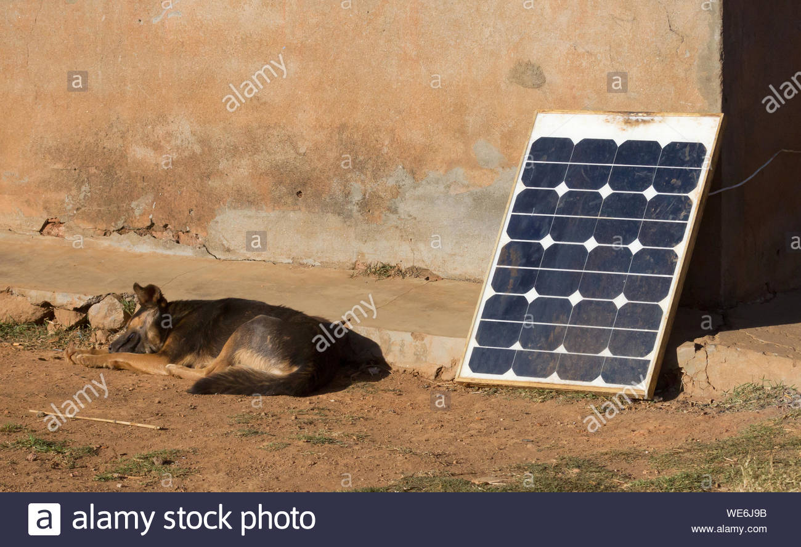

What does my countryside look like?
The name of my village is Ambodirano Ifody. There are mountains at the west and est of this small village. There are about thirty houses.
This village is a part of a city whole which is called Anosibe Ifody, in Moramanga district and Toamasina province.

Life in this countryside.
There are about thousands people in this village. Even though, everyone can know each other very well.
s About electricity
We don't have electricty from JIRAMA. People use solar pannels.
JIRAMA is a company which provides electricity in a town or city.
Farming
Most people are farmers. The main crop is rice. But, there are another crops that people farm, for example corn, ginger,...